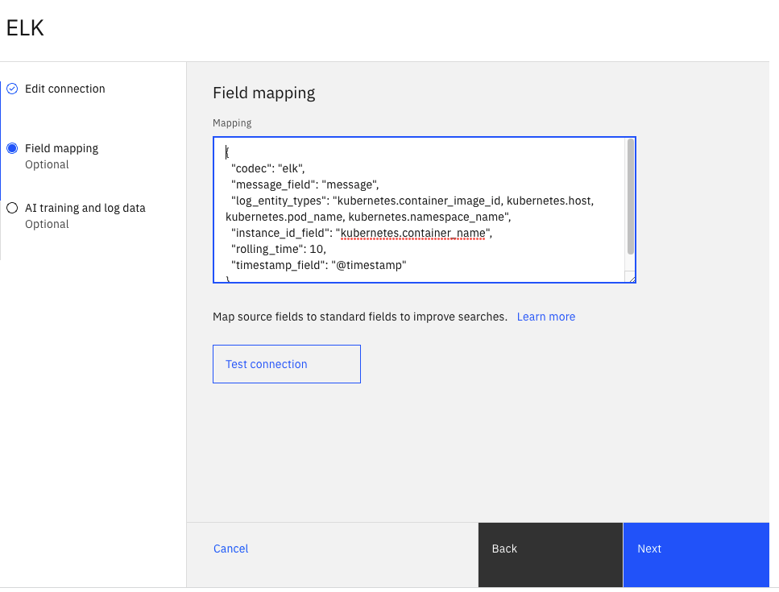

Welcome to the Watson AIOps v3.3 Lab
For full product documentation visit here.
Define EFK Integration
EFK is a variant of ELK (Elasticsearch, Logstash, and Kibana). EFK is a suite of tools combining Elasticsearch, Fluentd, and Kibana that functions as a log aggregation tool. To simplify the installation and configuration effort for installing the different components of the EFK stack on OpenShift, we leverage the OpenShift Logging library from OpenShift. OpenShift customers that prefer not to spend part of their budget on a commercial log aggregator such as Humio, Splunk, or LogDNA, more than likely use the OpenShift Logging library.
To have AI Manager collect logs from the EFK installation that leverages the OpenShift Logging library, you need to define an EFK integration. Here we provide the values that you should use for defining the EFK integration.
From the Home Page, clik on Data and tool connections under Overview on the left side of the page. Click on the Add connection button on the top right. On the ELK card, select Add connection. On the right side slider, click on Connect, as shown in the following screen.

Complete the ELK, Add connection form, with the following values:
Name: Name of your liking for the ELK integration (e.g.EFK for QOTD).-
ELK service URL: Get the service URL for the EFK installation from the Lab Parameter Table. -
Kibana URL: Get URL for Kibana from the Lab Parameter Table. -
Authentication type: Set this value toToken. -
Token: Get the token from the Lab Parameter Table. -
Kibana port: Use443for this field.
Click on the Next button.
Field mapping: Use the mapping shown below instead of the default mapping provided on the ELK integration. Make sure you see theValid JSON configurationmessage after that:
{
"codec": "elk",
"message_field": "message",
"log_entity_types": "kubernetes.container_image_id, kubernetes.host, kubernetes.pod_name, kubernetes.namespace_name",
"instance_id_field": "kubernetes.container_name",
"rolling_time": 10,
"timestamp_field": "@timestamp"
}
- Click on the
Test Connectionbutton and confirm you get Test Succeded
Click on the Next button.
-
Data flow: Turn this on. We will ingest historical data that we will use for training. -
Mode: Select theHistorical data for initial AI trainingoption.- Start date: April 23, 2022
- End Date: April 27, 2022
-
The following screens show the form update flow (note that config values may be different in the screen)




Finally, click on the Done button. After some time, you will see the message Connection completed. IBM Cloud Pak for Watson AIOps has successfully processed your request
Project layout
mkdocs.yml # The configuration file.
docs/
index.md # The documentation homepage.
... # Other markdown pages, images and other files.